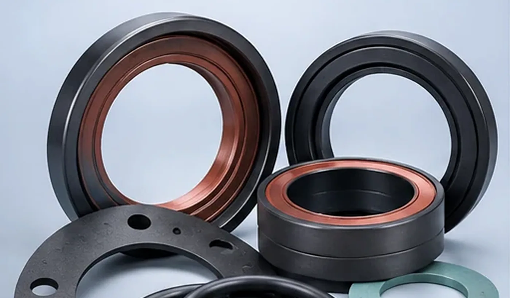
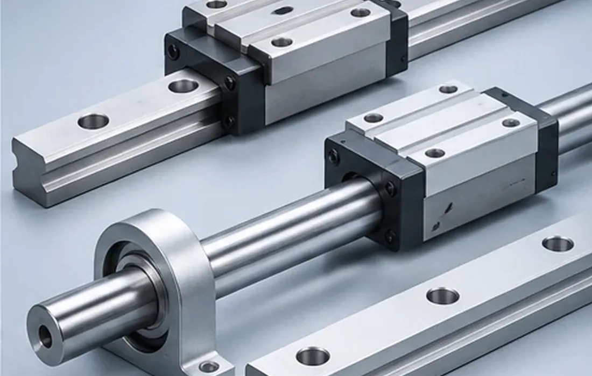

Qualité
Une culture qualité structurée autour de processus partagés.

La philosophie de LEFRANC : savoir-faire familial, relations durables et démarche qualité.
Découvrir notre expertise ↗
LEFRANC présente une culture d’entreprise familiale et une recherche de relations durables avec ses clients, ses fournisseurs et ses collaborateurs.
La déclaration de la direction souligne l’amélioration continue, le respect des engagements, les bonnes pratiques et le management de la qualité.
Une culture qualité structurée autour de processus partagés.
Des échanges techniques de proximité et des prestations ajustées.
Un savoir-faire entretenu par les équipes et les ateliers.
Une démarche visant à adapter les solutions aux besoins industriels.
Un besoin de maintenance, de fourniture technique ou d’accompagnement ? Contactez la compagnie LEFRANC.